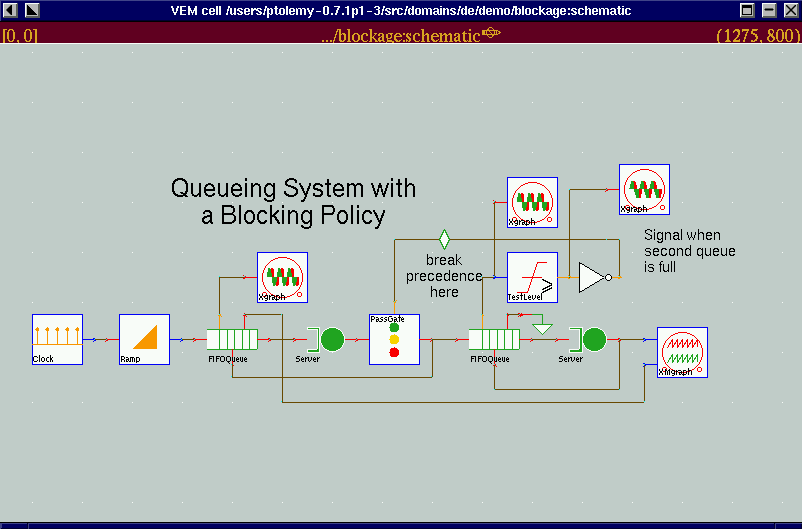

Demo of DE simulation applet
DE Simulation:
The following applet uses Ptolemy II DE domain architecture to simulate a
queueing system with blocking policy. This particular demo is taken from
Ptolemy 0.7.1 DE domain demo.
You can interact with the applet by choosing the stop time of the simulation.
This applet is implemented by
QueueApplet.java.
The simulation consists of a Clock
Actor, a
Ramp Actor,
FIFOQueue Actor,
Server Actor,
PassGate Actor,
Delay Actor,
TestLevel Actor,
and a Not
Actor connected to a Plot Actor.

Copyright © 1998 The Regents of the University of California.
All rights reserved.
Last updated: $Date$, comments to: ptII@eecs.berkeley.edu